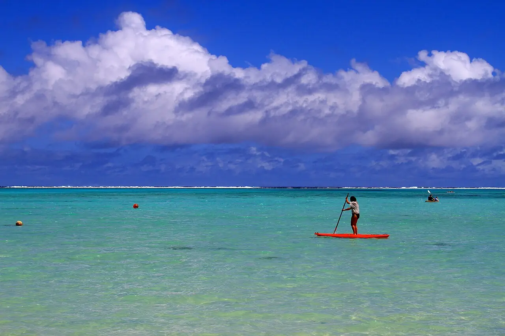

Lagon de Muri
Rarotonga, Îles Cook · kitesurf, paddle, kayak, snorkeling

Lagon peu profond du sud-est de Rarotonga, abrité par le récif et parsemé de petits motu. Les alizés y attirent les kitesurfeurs, et l’eau calme convient au paddle et au kayak jusqu’aux îlots.
- Lieu
- Rarotonga, Îles Cook
- Niveau
- Débutant
- Activités
- kitesurf, paddle, kayak, snorkeling
- Type d'eau
- Mer / océan
- Coordonnées
- -21.26, -159.73 (position approximative du secteur)
Dangers à connaître
- Forts courants sortants dans les passes vers le large.
- Patates de corail peu profondes : chaussons conseillés.
Le conseil d'Ocean Buddy
Pour le kite, prends un cours local : le lagon est peu profond et les zones de navigation sont partagées avec les baigneurs.
Ouvrir dans Ocean Buddy Télécharger sur l'App Store
Source : Fiche Ocean Buddy · septembre 2026 · à vérifier localement.